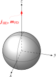

Dipoles

Definition
The dipoles are defined as infinitesimal time harmonic current elements. Note that the definitions differ from the ones employed in [Jac99, pp. 411ff] basically by a factor of $k$. Hence, they lead to different static fields, i.e., for $k\rightarrow 0$.
Hertzian Dipole
The Hertzian dipole with dipole length $l$, electric current $I$, and orientation $\hat{\bm p}$ at position $\bm r_0$ is assumed to have the current density
\[\bm{j}_\mathrm{HD} = Il \hat{\bm p} \delta (\bm r - \bm r_0) \,,\]
where $\delta$ denotes the Dirac delta distribution.
Fitzgeral Dipole
The Fitzgerald (magnetic) dipole with dipole length $l$, magnetic current $M$, and orientation $\hat{\bm p}$ at position $\bm r_0$ is assumed to have the current density
\[\bm{m}_\mathrm{FD} = Ml \hat{\bm p} \delta (\bm r - \bm r_0) \,.\]
API
The API provides the following constructors with default values:
SphericalScattering.HertzianDipole — Type
ex = HertzianDipole(
embedding = Medium(ε0, μ0),
frequency = error("missing argument `frequency`"),
amplitude = 1.0,
position = error("missing argument `position`"),
orientation = SVector{3,typeof(frequency)}(0.0, 0.0, 1.0),
)SphericalScattering.FitzgeraldDipole — Type
ex = FitzgeraldDipole(;
embedding = Medium(ε0, μ0),
frequency = error("missing argument `frequency`"),
amplitude = 1.0,
position = error("missing argument `position`"),
orientation = SVector{3,typeof(frequency)}(0.0, 0.0, 1.0),
)Radiated Field
The electric field of the Hertzian dipole itself (without scatterer) is [Jac99, pp. 411ff]
\[\bm e(\bm r) = Z_\mathrm{F} \cfrac{Il}{4 \pi} \mathrm{e}^{-\mathrm{j} k r} \left( \cfrac{k}{r} ((\hat{\bm n} \times \hat{\bm p}) \times \hat{\bm n}) + \left(\cfrac{1}{k r^3} + \cfrac{\mathrm{j}}{r^2} \right) (3 \hat{\bm n} (\hat{\bm n} \cdot \hat{\bm p}) - \hat{\bm p}) \right)\]
with $Z_\mathrm{F} = \sqrt{\mu / \varepsilon}$ and the magnetic field
\[\bm h(\bm r) = \cfrac{Il}{4 \pi} \cfrac{\mathrm{e}^{-\mathrm{j} k r} }{r} \left(k + \cfrac{1}{\mathrm{j} r} \right) (\hat{\bm n} \times \hat{\bm p})\]
where
\[\hat{\bm n} = \cfrac{\bm r - \bm r_0}{|\bm r - \bm r_0|}\,.\]
The fields of the Fitzgerald dipole follow from the duality relations.
API
The general API is employed:
E = field(ex, ElectricField(point_cart))
H = field(ex, MagneticField(point_cart))
FF = field(ex, FarField(point_cart))Scattered Field
The scattered field computation is a generalization of the analysis in [Jin15, pp. 374ff]. For the magnetic dipole duality relations are employed. The series and their evaluation are described under Electromagnetic Spheres.
For the scattered field computation the orientation of the dipole is restricted: the dipole has to be perpendicular to the surface of the sphere.
This can be achieved, e.g., by defining the orientation first
orientation = normalize(SVector(0.0,1.0,1.0))and then setting the position as a multiple of the orientaion:
position = 2.0 * orientationAPI
The general API is employed:
E = scatteredfield(sp, ex, ElectricField(point_cart))
H = scatteredfield(sp, ex, MagneticField(point_cart))
FF = scatteredfield(sp, ex, FarField(point_cart))Total Field
API
The general API is employed:
E = field(sp, ex, ElectricField(point_cart))
H = field(sp, ex, MagneticField(point_cart))
FF = field(sp, ex, FarField(point_cart))